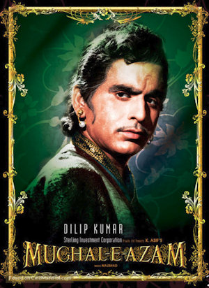
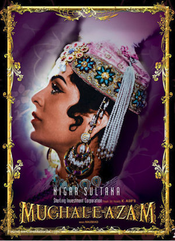

Home
Profiles
Reviews
Songs
Contact Us
Profiles A -Z
Dilip Kumar

as Prince Salim
Nigar Sultana

as Bahaar
Prithviraj Kapoor
as Mughal Emperor Akbar
Madhubala
as Anarkali
Akhtari
(1940s)
Ambika Johar
(1970s)
Arti
(1950s)
Azad Irani
(Late 1950s – 1970s)
Dina
(1970s)
Emmy Minwala
(1950s - 1970s)
Ghazala
(1960s - 1970s)
Greta Bacarro
(1940s - 1950s)
Gul Hamid
(1930s)
Gulshan Ara
(1950s)
Hamida Bano
(1940s – 1950s) -
Singer
Heera Sawant
(1940s – 1960s)
Hiralal
(1920s – 1980s)
Indira Devi
(1950s)
Kafira
(1950s - 1960s)
Kate Sethi
(1950s)
Kumud Chhugani
(1960s - 1970s)
Latika
(1940s)
Madhubala
(1940s - 1960s)
Meena Fernandez
(1950s)
Meera Misra
(Late 1940s - Early 1950s)
Mubarak Begum
(1940s - 1960s) -
Singer
Munawwar Sultana
(1940s - 1960s) -
Singer
Nasreen
(1950s - 1960s)
Nazneen
(1970s - 1980s)
Pompi
(1970s)
Poonam
(1950s - 1960s)
Rajni
(1950s - 1960s)
Ramola
(1930s - 1950s)
Roshan
(1960s - 1970s)
Shad
(1950s)
Shahina
(1950s – 1960s)
Shanti Madhok
(1940 - 1950s)
Sheela Kashmiri
(1950s – 1960s)
Sheila Ramani
(1950s – 1960s)
Shola
(1950s – 1960s)
Sofia
(Late 1930s to 1940s)
Sofia Bano
(1960s - 1970s)
Suresh
(1930s - 1980s)
Sybil
(1950s)
Veera
(1940s - 1950s)
Venus Banerjee
(1950s)
Vijay Kumar
(1950s)